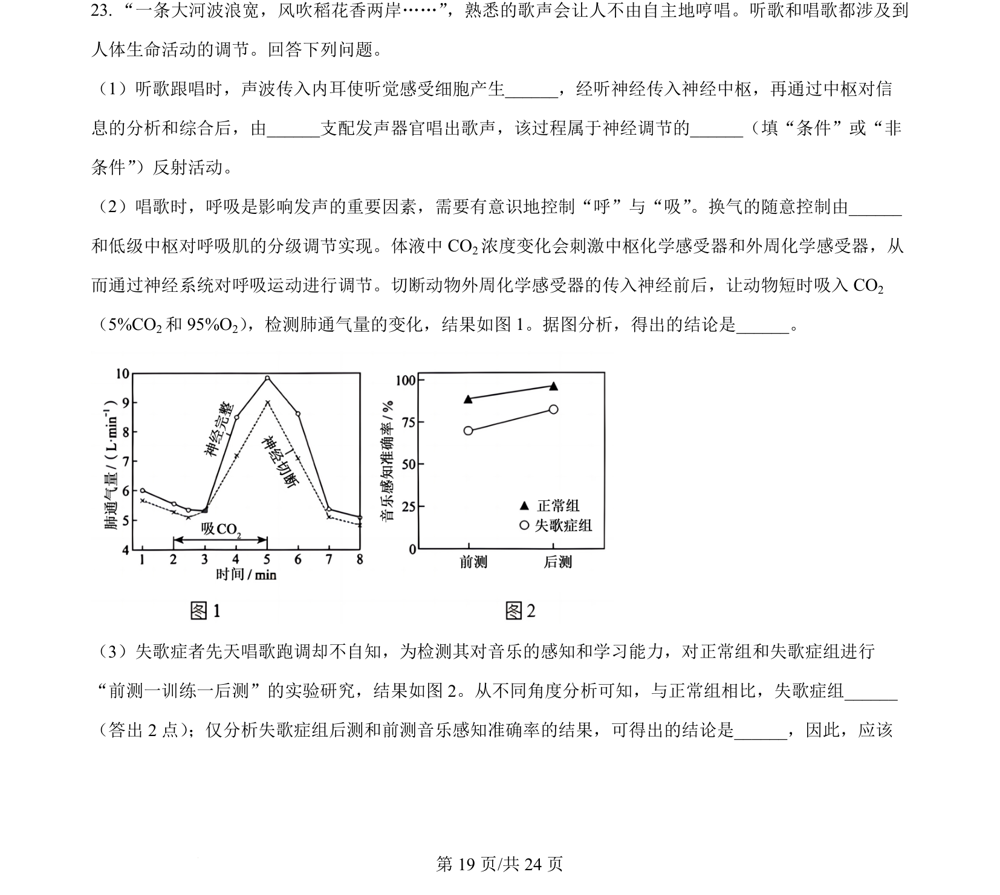
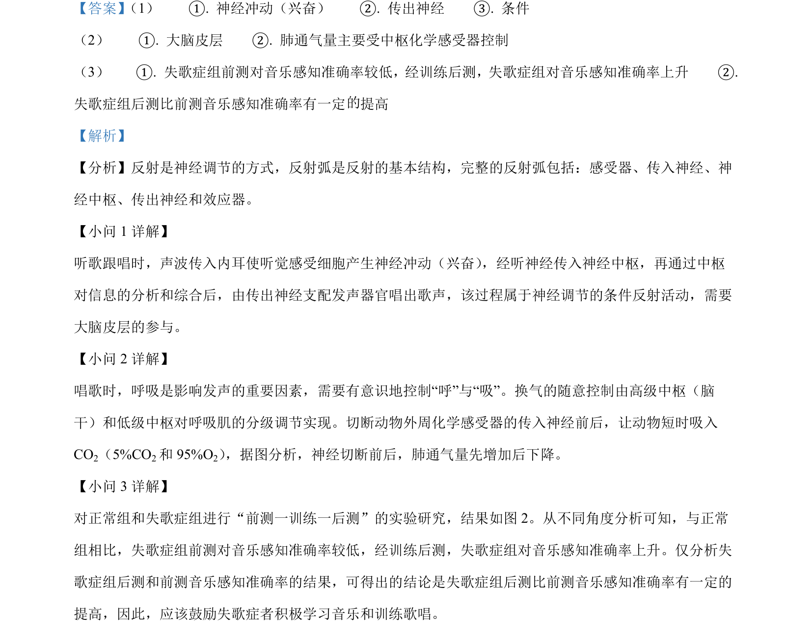

考点：神经调节 条件反射 体液调节 实验分析
神经调节
条件反射
体液调节
实验分析

本题通过听歌跟唱情景考查神经调节、反射类型、呼吸的神经与体液调节及失歌症实验数据分析。

📄 原 PDF 第 19 页：素材/真题/吉林/2008-2024·（吉林）生物高考真题/2024年高考生物试卷（辽宁）（解析卷）.pdf
素材/真题/吉林/2008-2024·（吉林）生物高考真题/2024年高考生物试卷（辽宁）（解析卷）.pdf